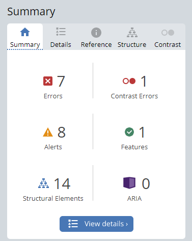
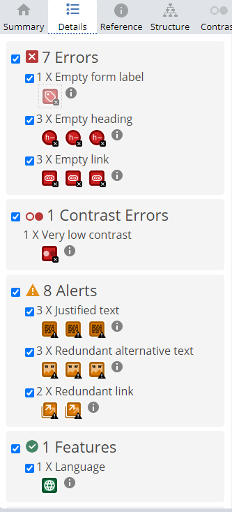
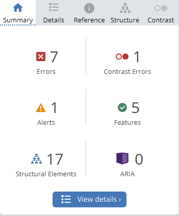
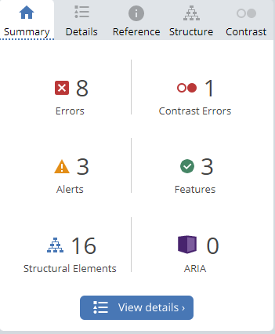
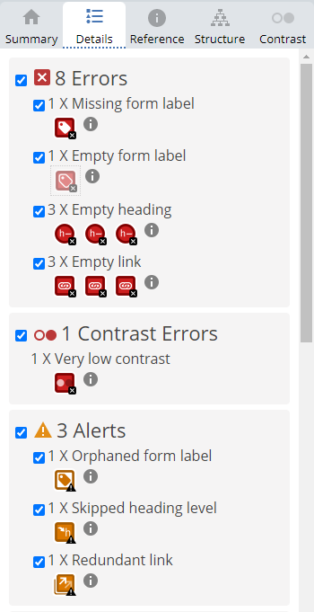
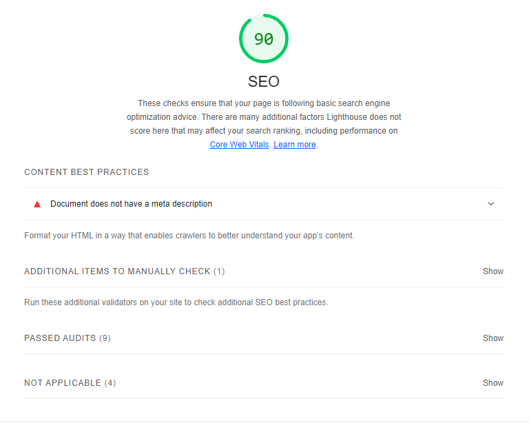
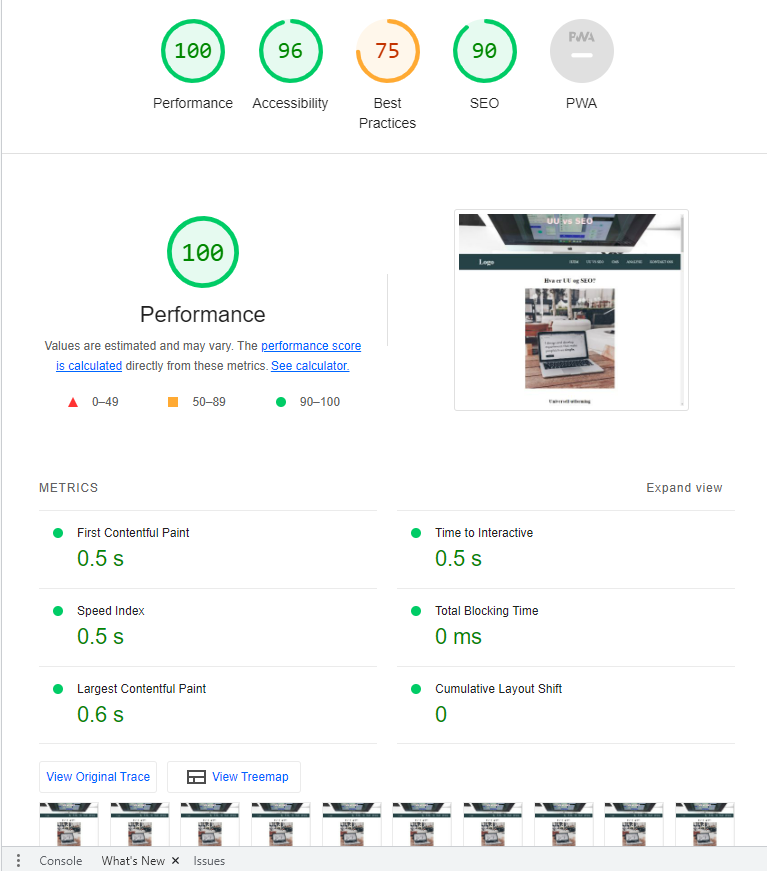
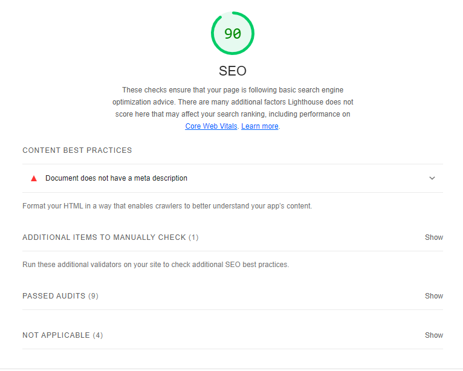
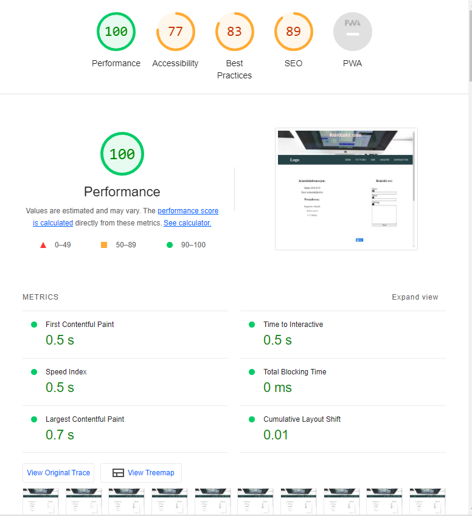
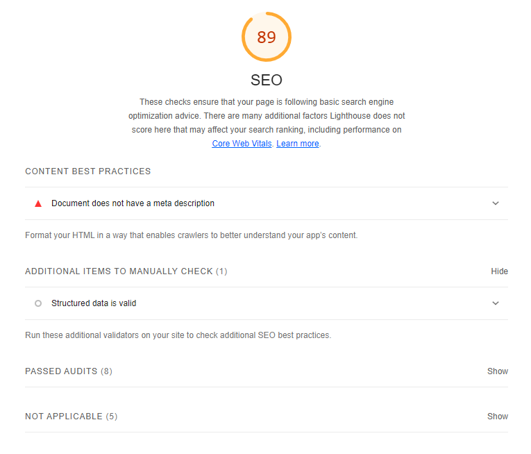

Vurdering av universell utforming:
Analyse av forside:


Disse to linkene mine er kontakt oss-knappen og hjem-knappen i navbaren på forsiden min. Jeg får ikke endret på dette fordi i deleksamen 2 står det at forsiden skal inneholde en kontakt oss-knapp som fører til kontakt oss-siden samtidig som at hjem-knappen på navigasjonen skal føre til forsiden. Dette er for å skape bedre og enklere brukeropplevelse for leseren.
Analyse av UU-vs-SEO siden


NB: CMS-siden min, og analysesiden min har samme error og alert som forsiden min og UU-vs-SEO-siden min, så jeg legger ikke til skjermbilde av de andre sidene mine.
Analyse av kontakt-oss-siden:


Jeg fikk også opp et nytt alert hvor det står "Orphaned form label". Dette betyr at en form label er synlig, men er ikke riktig assosiert med form controllen.
Vurdering av søkemotoroptimalisering:
Analyse av forside:

Under kommer bilde av et detaljert bilde av SEO-resultatet mitt av forsiden.

Analyse av UU-vs-SEO-siden:


NB: SEO-resultatet mitt på CMS-siden og analysen er det samme som tidligere. Det er derfor jeg ikke legger ved skjermbilde av resultatet fra de sidene. Kontakt-oss-siden derimot fikk annerledes score. Det legger jeg ut skjermbilde av.
Analyse av kontakt-oss-siden:


Vurdering av heuristisk evaluering:
#1: Visibility of system status
Måloppnåelse: God
På URL står det hvor brukeren er på nettsiden. For eksempel hvis
brukeren vil sjekke ut CMS-siden, står det både i headeren og i
URL-en at brukeren er på riktig side.
#2: Match between system and the real world
Dette punktet handler om at språkbruken på nettsiden bør være lik språket en bruker til daglig. Ord, setninger osv bør ikke være skrevet slik at brukeren ikke forstår hva som har blitt skrevet. Det bør være lett og enkelt å forstå. Dette skaper tillit og god brukeropplevelse for leseren.
Måloppnåelse: God
På nettsiden min har jeg brukt et språk som er enkelt og lett å lese og forstå. Ved bruk av vanskelige begreper som eksempel CMS, har jeg lagd en egen innholdsside for akkurat dette, hvor jeg forklarer konseptet med CMS. For leseren skal dette være forståelig og enkelt forklart.
I tillegg har jeg brukt forskjellige ikoner som for å illustrere budskapet enda mer. I kontakt-oss-siden min, har jeg brukt ikoner til de ulike punktene. For punktet epost, har jeg lagt til et ikon som forklarer at dette er en epost. Bildet er allmennbrukt og veldig enkelt å forstå.
#3: User control and freedom
User control and freedom handler om at bruker skal ha lett tilgang til "exit". I dette tilfellet her gjelder det forsiden. Bruker skal ikke føle at de er "låst" til en nettside og trenger derfor en lett tilgjengelig exit. Noen ganger kan det oppstå situasjoner hvor bruker angrer eller ikke vil fortsette videre. I sånne tilfeller gjelder dette.
Måloppnåelse: Delvis god
Nettsiden min har ikke eksakt et synlig "exit" knapp hvor bruker kan trykke seg ut av. Derimot har nettsiden min en logo, hvor bruker kan trykke på for å gå tilbake til forsiden. Samtidig på menyen står "Hjem" oppført, noe som tydeliggjør for brukeren at her kan det trykkes på for å få seg ut.
#4: Consistency and standards
Bruker bør ikke sitte igjen med den følelsen at forskjellige ord, situasjoner eller handlinger betyr det samme. Strukturen til nettsiden bør følge standard prosedyre for bransjen.
Måloppnåelse: God
Nettstedet mitt er strukturert og bygd opp slik at brukeren ikke kommer til tvil om dette er et nettsted eller ikke. Nettstedet er bygd opp slik at det er et klart og tydelig menu med overskrifter som skiller mellom innhold. Nettstedet følger standard struktur for nettsider.
#5: Error prevention
Noen ganger kan brukeren for eksempel i en nettbank betale noen regninger, og få opp meldingen "Er du sikker på denne transaksjonen?" Dette er for å la bruker ha mulighet til å ha full kontroll på egne handlinger. Det er fort gjort å gjøre noe man ikke skulle ha gjort, og da er det veldig fint om nettsiden er designet slik at bruker er bevisst over sine handlinger. En exit-knapp i dette eksemplet kan være en fin måte for brukeren å ha full kontroll på.
Måloppnåelse: Delvis god
Nettstedet mitt består av to artikler med hver innholdsside og en
kontakt-oss skjema. Kontakt-oss-siden har en send-knapp som gjør det
mulig for brukeren å sende en melding til den som har ansvaret for
nettsiden. Kontaktskjemaet har ikke en funksjon hvor den spør
brukeren "Er du sikker på å sende denne meldingen?" fordi
kontaktskjemaet er bare et skjema uten noe funksjon hvor det direkte
er mulig å sende melding. Av den grunn har ikke nettstedet mitt en
funksjon som håndterer feil som brukeren gjør.

#6: Recognition rather than recall
Nettstedet skal være designet slik at brukeren ikke skal huske eksempel hvor på nettsiden de er, eller sitte igjen med den følelsen av at de må huske på informasjon fra et sted til et annet. Det å annerkjenne noe er bedre enn å gjette seg frem til ting. Det er av den grunn viktig at nettstedet gir brukeren en tydelig og forståelig innhold.
Måloppnåelse: God
Nettstedet mitt har et menu-funksjon med alle innholdssidene på nettstedet. Dette skaper god kontroll og lar bruker annerkjenne og gir brukeren valgmuligheter.
#7: Flexibility and efficiency of use
Dette punktet handler om at nettstedet bør være designet slik at bruker skal ha snarveier tilgjengelig. Disse snarveiene kan være for eksempel at logo-knappen direkte fører til forsiden. Nettstedet skal være fleksibelt og effektivt for brukeren. Et annet eksempel er command-funksjonen hvor brukere kan bruke snarveier til å lagre, refreshe nettsiden.
Måloppnåelse: Delvis god
Nettstedet mitt har noen funksjoner som lar bruker eksempel gå
tilbake til forsiden hvis de skulle ønske det. Det er et synlig logo
knapp på menu-baren og samtidig så kan bruker trykke direkte på hjem
på menuen også. På forsiden er det et synlig tekst "Kontakt oss" som
bruker kan trykke på for å gå direkte til kontakt-oss-siden.
Nettstedet mitt har hamburgermeny når den er i mobilversjon, som
gjør det enkelt for bruker å dra dit bruker skulle ønske seg.
#8: Aesthetic and minimalist design
Punkt 8 handler om at nettstedet ikke inneholder unødvendige elementer eller unødvendig informasjon som er irrelevant for nettsiden. Det er viktig at innholdet og det visuelle designet fokuserer på det essensielle i nettsiden, at den fremmer formålet til nettstedet.
Måloppnåelse: God
Nettstedet mitt er designet slik at innholdet fremmes klart og tydelig for brukeren. Den har tydelige overskrifter som skiller mellom hvert innhold, og brukeren får en bra forståelse på innholdet. I tillegg er designet slik at det er enkle farger, det er ikke blitt brukt sterke farger noe som gjør at innholdet ikke blir "skygget" av designet.
#9: Help users recognize, diagnose, and recover from errors
Feilmeldinger som kan dukke opp på plattformen, bør håndteres slik
at bruker forstår hva feilmeldingen handler om. Avansert språkbruk
bør unngås. Samtidig bør feil bli presentert med visuelle effekter
som lar bruker legge merke til dette. Ved feil bør nettsiden
konstant tilby en løsning.
For eksempel ved bestilling av en vare, krever nettsiden at bruker
legger til adressen sin slik at varen blir sendt til riktig adresse.
Hvis bruker har glemt et felt, bør nettsiden håndtere dette og gi
beskjed til bruker om at det feltet må fylles ut.
Måloppnåelse: God
Nettstedet mitt inneholder ikke funksjoner som kan gi feilmeldinger, så av den grunn er dette punktet irrelevant for nettstedet mitt. Nettstedet mitt inneholder artikkel og et kontaktskjema. Kontaktskjema er bare et enkelt skjema uten den funksjonen at bruker kan sende melding. Så av den grunn er sannsynligheten for at det skal dukke opp feil, lite.
#10: Help and documentation
Bruker skal ha assistanse til enhver tid, og bør ha lett tilgang til å finne det bruker ønsker å finne. For eksempel har de fleste nettsider en søk-bar som lar brukere søke på et produkt direkte i søkefeltet. I tillegg til at bruker skal ha lett tilgang til kontaktinformasjonen til nettsiden ved eventuelle spørsmål.
Måloppnåelse: God
Nettstedet mitt har kontaktinformasjonen til skolen på kontakt-oss-siden som gir bruker informasjonen som trengst dersom de skulle ringe eller besøke skolen. Det er et synlig kart på kontakt-oss-siden som enkelt navigerer bruker til riktig adresse. Kontakt-oss-siden inneholder også et kontaktskjema som bruker kan bruke hvis de skulle sende melding direkte til de ansvarlige for nettstedet.
På meny under Analyse 2, kan du se endringene som har blitt gjort etter analysen.
Tweet to @Saruu1505